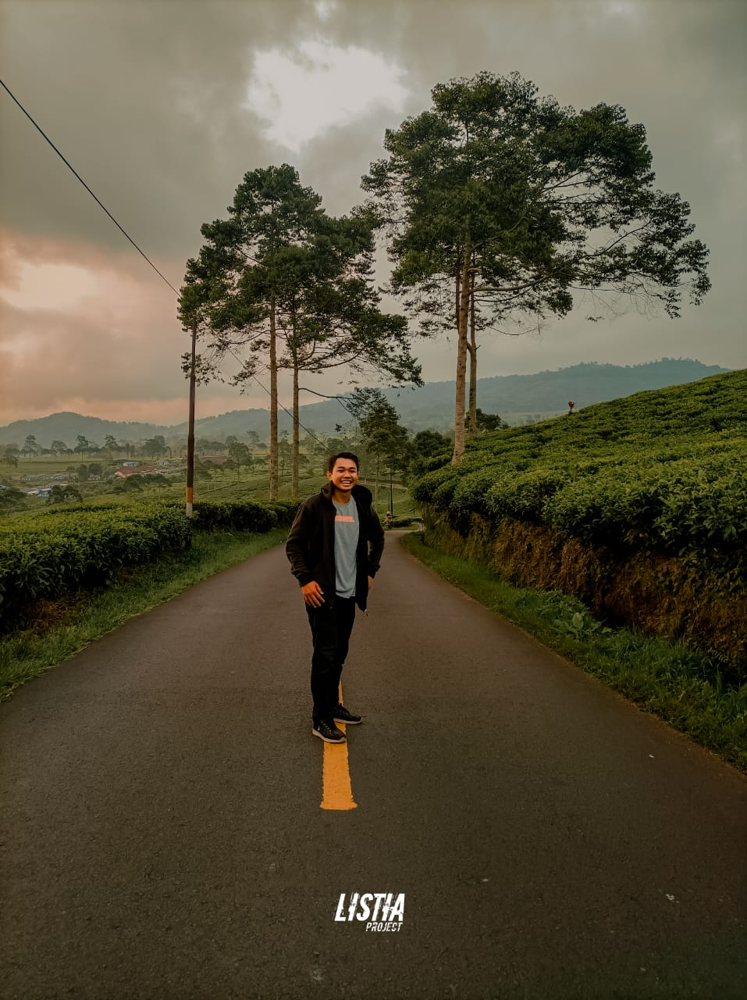
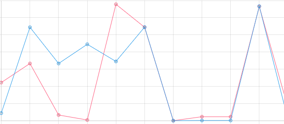
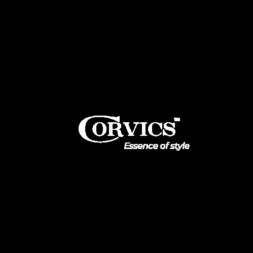
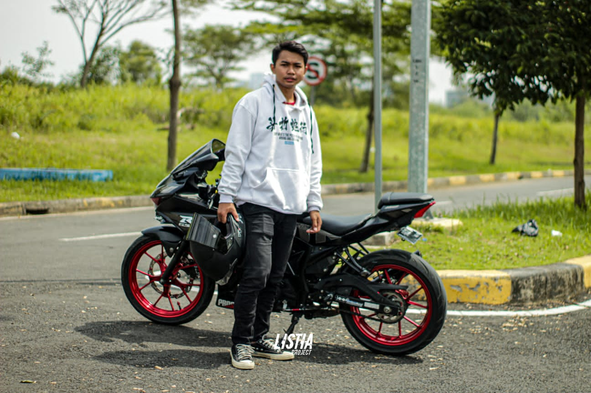
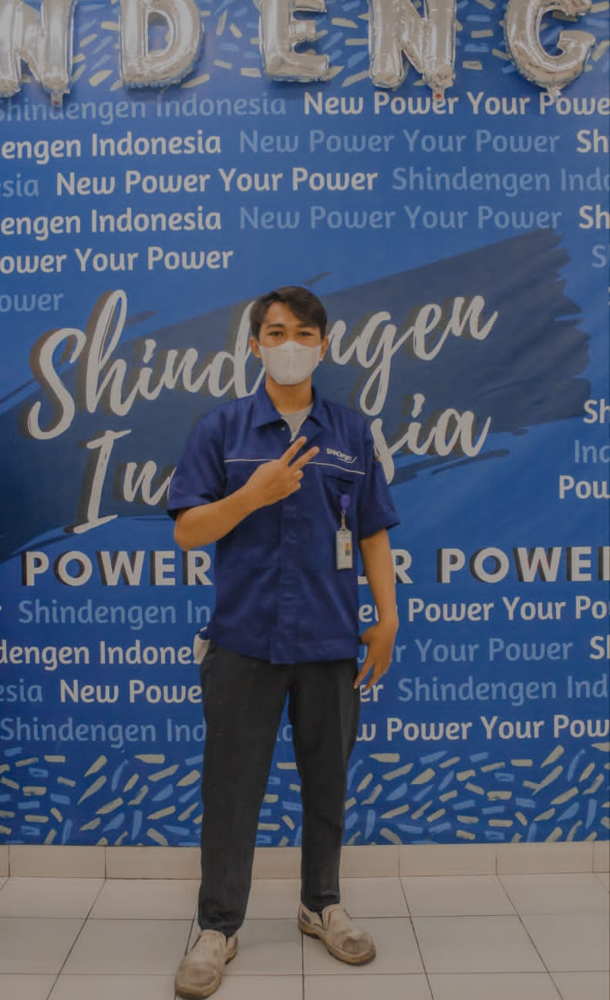
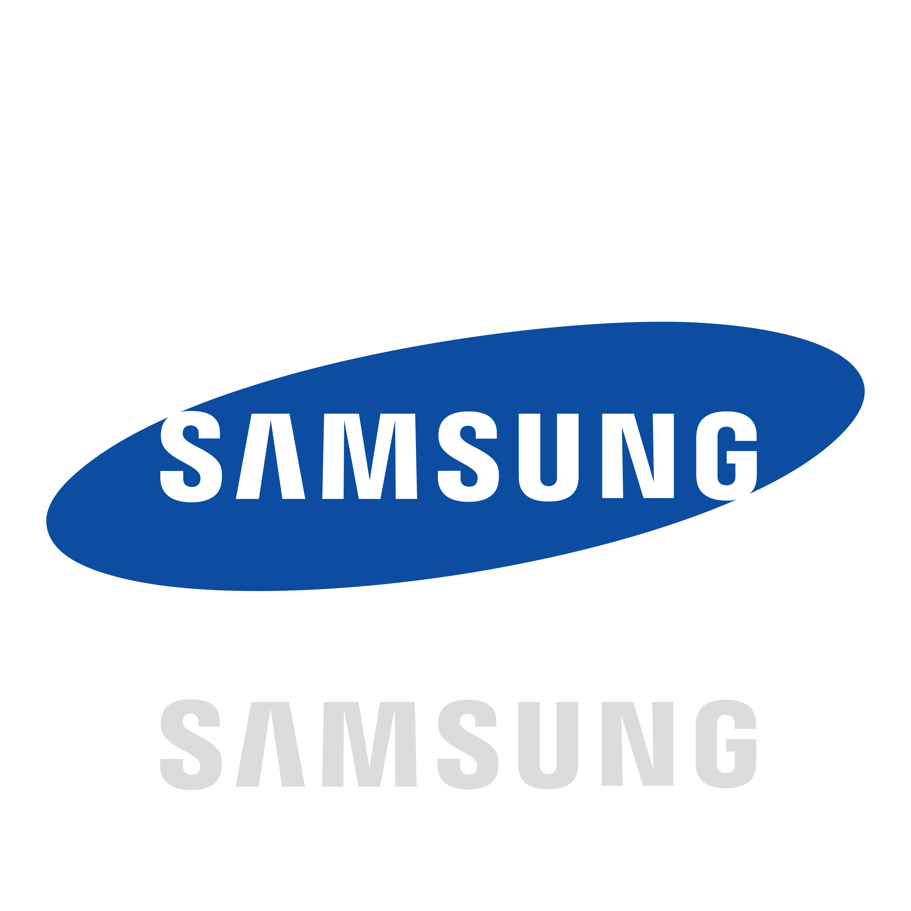
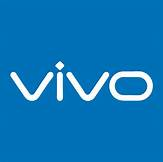
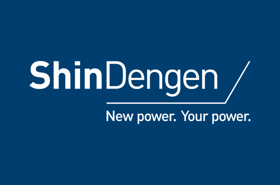
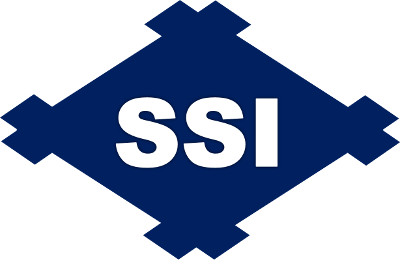

Ahmad Fathurahman

Programer and Fotografer
Keseharian Sebagai Seorang Programmer dan Fotografer
Saya adalah seorang programmer yang mencintai dunia coding dan kreativitas. Setiap hari, saya mengeksplorasi kode-kode yang menghasilkan solusi kreatif bagi masalah kompleks. Namun, saya juga menjalani passion saya sebagai fotografer. Melalui lensa kamera, saya menangkap momen-momen berharga dan mengabadikannya dalam bentuk seni visual.
Kehidupan ganda ini memberikan saya kebahagiaan dan keseimbangan yang luar biasa. Saya percaya bahwa filosofi hidup saya, yakni berusaha semaksimal mungkin dalam setiap proses dan selalu menikmati perjalanan, menjadi pendorong utama kesuksesan dan kepuasan dalam segala hal yang saya lakukan.
Saya selalu berupaya memberikan yang terbaik dalam setiap kode yang saya tulis, setiap gambar yang saya ambil, dan setiap langkah yang saya ambil dalam hidup ini. Dalam setiap tantangan, saya menemukan kesempatan untuk tumbuh dan belajar. Saya memahami bahwa setiap perjalanan memiliki nilai dan hikmahnya sendiri, dan saya dengan penuh semangat menikmati setiap langkah dalam perjalanan ini.
Project
ERP. Enterprise Resource Planning

Sistem Enterprise Resource Planning (ERP) untuk Manajemen Produksi dan Kolaborasi
Sistem Enterprise Resource Planning (ERP) yang telah saya kembangkan adalah sebuah solusi canggih yang ditujukan untuk menyempurnakan dan menyempurnakan proses manajemen produksi serta kolaborasi antar tim dalam lingkungan industri. Dengan fokus pada pengelolaan data harian, analisis kinerja, serta komunikasi lintas shift, proyek ini bertujuan untuk meningkatkan efisiensi, ketepatan, dan transparansi operasional.
Fitur Utama:
Inputan Daily Result dan Planning Actual:
ERP ini memungkinkan tim produksi dengan mudah memasukkan hasil produksi harian dan perencanaan aktual. Data ini secara otomatis diintegrasikan ke dalam sistem untuk menganalisis dan memantau kinerja produksi secara real-time.
Visualisasi Grafik:
Sistem menyediakan fitur visualisasi grafik yang menampilkan perbandingan antara rencana dan hasil aktual. Grafik ini memberikan wawasan cepat tentang seberapa baik kinerja produksi sesuai dengan rencana yang telah ditetapkan.
Memo Antar Shift:
ERP memungkinkan pengiriman memo antar shift, memfasilitasi komunikasi penting dan pertukaran informasi yang berlangsung lancar. Tim produksi dapat dengan cepat berbagi pengetahuan tentang perubahan kondisi, tantangan yang dihadapi, dan solusi yang diusulkan.
Manfaat:
Optimisasi Produksi: Dengan data harian yang akurat dan analisis visual, manajemen dapat mengambil keputusan berdasarkan informasi yang relevan, memungkinkan peningkatan efisiensi produksi.
Kolaborasi yang Lebih Baik: Memo antar shift memperkuat kolaborasi antara tim produksi, mengurangi kesalahan komunikasi, dan meningkatkan respons terhadap perubahan yang cepat.
Transparansi Operasional: Informasi terkini tentang produksi dan perencanaan memberikan transparansi yang lebih tinggi kepada seluruh tim produksi dan manajemen.
Sistem ERP ini diharapkan dapat memberikan manfaat signifikan dalam mengelola produksi, meningkatkan kerja sama tim, dan mengoptimalkan efisiensi operasional secara keseluruhan.
Project
Corvics

Corvics.ind: Platform Eksklusif untuk Fashion dan Outfit
Corvics.ind adalah destinasi online yang eksklusif untuk para pecinta fashion yang mencari pilihan outfit berkualitas tinggi dan gaya terbaru. Sebagai platform penyedia barang, Corvics.ind memberikan pengalaman berbelanja yang unik dan memikat, membantu pelanggan menemukan pilihan pakaian dan aksesori yang sesuai dengan gaya mereka.
Fitur Utama:
Koleksi Terseleksi:
Corvics.ind menghadirkan koleksi outfit dari merek-merek terkemuka dan desainer berbakat, memastikan pelanggan memiliki akses ke produk berkualitas tinggi dan tren terbaru di dunia fashion.
Penyaringan Personalisasi:
Pelanggan dapat menyaring produk berdasarkan preferensi pribadi, seperti gaya, warna, ukuran, dan merek. Ini memudahkan mereka untuk menemukan pilihan yang sesuai dengan selera mereka.
Informasi Produk yang Mendalam:
Setiap produk dilengkapi dengan deskripsi rinci, gambar berkualitas tinggi, dan informasi terkait seperti bahan, perawatan, dan ukuran. Ini membantu pelanggan membuat keputusan berbelanja yang lebih cerdas.
Fitur Wishlist dan Favorit:
Pelanggan dapat membuat daftar produk favorit mereka dan menyimpannya dalam daftar Wishlist. Ini memungkinkan mereka untuk mengelola dan mempertemukan produk yang menarik minat mereka.
Panduan Gaya dan Tren Terkini:
Corvics.ind menyediakan panduan gaya dan tren fashion terkini melalui artikel, tips, dan inspirasi gaya, membantu pelanggan tetap up-to-date dengan dunia fashion.
Manfaat:
Pilihan Eksklusif: Corvics.ind memberikan akses eksklusif ke produk-produk fashion berkualitas tinggi yang mungkin sulit ditemukan di tempat lain.
Kemudahan Berbelanja: Antarmuka yang ramah dan fitur penyaringan personalisasi membantu pelanggan menemukan produk yang sesuai dengan kebutuhan pengguna dan selera mereka.
Informasi Mendalam: Informasi produk yang detail memberikan kepercayaan kepada pelanggan dalam memilih produk yang tepat.
Inspirasi Gaya: Panduan gaya dan tren mode membantu pelanggan menjelajahi gaya baru dan berani.
Corvics.ind menjadi tempat yang sempurna bagi para pecinta mode untuk menjelajahi, berbelanja, dan mengekspresikan diri melalui pilihan pakaian yang unik dan bergaya. Dengan kualitas produk dan pengalaman berbelanja yang istimewa, Corvics.ind menambah semangat eksklusifitas dalam mode modern dunia.
Project
Fotografer

Ini adalah foto yang saya ambil saat berlibur di Bali. Foto ini menunjukkan keindahan alam dan budaya Bali yang kaya.

Ini adalah foto yang saya ambil saat menghadiri acara pernikahan teman saya. Foto ini menunjukkan kebahagiaan dan harapan yang terpancar dari wajah pengantin.
Experience
Pengalaman di PT Manufacturing
Saya memiliki pengalaman yang beragam dalam dunia produksi, dengan berkontribusi sebagai operator produksi di perusahaan-perusahaan ternama seperti PT Samsung Electronics Indonesia, PT Vivo Mobile Indonesia, PT Shidengan Indonesia, dan PT Sumiden Sintered Component Indonesia. Pengalaman ini telah memberikan saya wawasan mendalam tentang proses produksi dan manufaktur yang sangat berharga.




Pengembangan Diri
Selain pekerjaan saya di industri manufaktur, saya juga merupakan seorang pembelajar yang tekun. Saya membangun pengetahuan pemrograman secara otodidak dan terus mengembangkannya dengan aktif mengikuti komunitas pemrograman. Kegiatan ini telah memungkinkan saya untuk terus berinovasi dan mengikuti perkembangan teknologi terbaru.
Minat dalam Fotografi
Saya juga memiliki minat yang mendalam dalam fotografi, yang saya pelajari secara otodidak. Saya mengikuti sebuah komunitas fotografi yang membantu saya mengasah kemampuan saya dalam mengabadikan momen-momen berharga. Kombinasi antara pengalaman di industri dan minat dalam pemrograman serta fotografi memotivasi saya untuk terus belajar dan berkembang dalam bidang yang saya cintai.
About me
"Salam, saya Ahmad Fathurahman, dan saya ingin berbagi sedikit tentang diri saya. Saya adalah seseorang yang penuh antusiasme terhadap dunia teknologi dan seni visual. Sejak kecil, saya telah terpesona oleh potensi yang tak terbatas dari kedua bidang ini.
pengalaman saya, membekali saya dengan fondasi yang kuat dalam pemrograman dan komputer. Selama belajar, saya telah terlibat dalam berbagai proyek yang menantang dan memungkinkan saya untuk terus belajar dan berkembang dalam dunia pemrograman.
Di sisi lain, fotografi adalah hobi yang saya kembangkan seiring berjalannya waktu. Kamera adalah teman setia saya dalam mengeksplorasi dunia visual. Dalam setiap foto yang saya ambil, saya berusaha menangkap emosi, keindahan, atau cerita yang mungkin terlewatkan oleh mata orang lain.
Pada titik ini dalam perjalanan hidup saya, saya telah berhasil menggabungkan dua passion saya. Saya mengambil tantangan untuk menciptakan pengalaman digital yang unik dengan menggunakan keterampilan pemrograman saya, dan kemudian memperkaya kontennya dengan visual yang kuat melalui fotografi.
Selain profesionalisme, saya adalah seseorang yang bersemangat untuk terus belajar dan berkolaborasi. Saya percaya bahwa kolaborasi adalah kunci untuk menghasilkan karya-karya yang luar biasa. Jika Anda memiliki ide atau proyek yang ingin Anda diskusikan atau berkolaborasi, jangan ragu untuk menghubungi saya.
Terima kasih telah mengunjungi halaman "About Me" saya. Saya berharap melalui website ini, Anda dapat mengenal saya lebih baik dan menikmati eksplorasi melalui karya-karya saya. Saya selalu terbuka untuk berbicara dan berbagi ide dengan orang-orang yang memiliki minat dan visi yang sama. Mari berkolaborasi dan menjalani perjalanan kreatif bersama!"